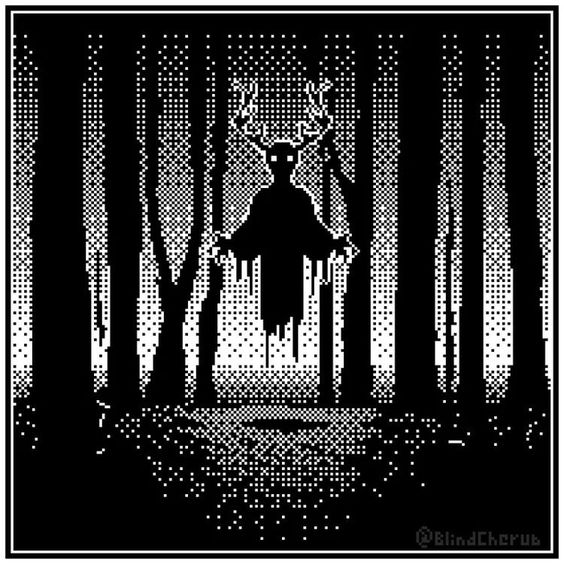

Mistérios da Mansão Esquecida

Enquanto você adentra a passagem secreta, o ar parece ficar mais pesado ao seu redor, como se a própria escuridão estivesse se fechando sobre você. Seguindo adiante, você se vê diante de uma figura sombria, pairando no fim do corredor. Seus olhos brilham com uma intensidade sinistra, e você sente uma aura de malícia emanando dela.